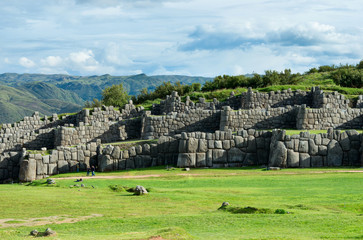
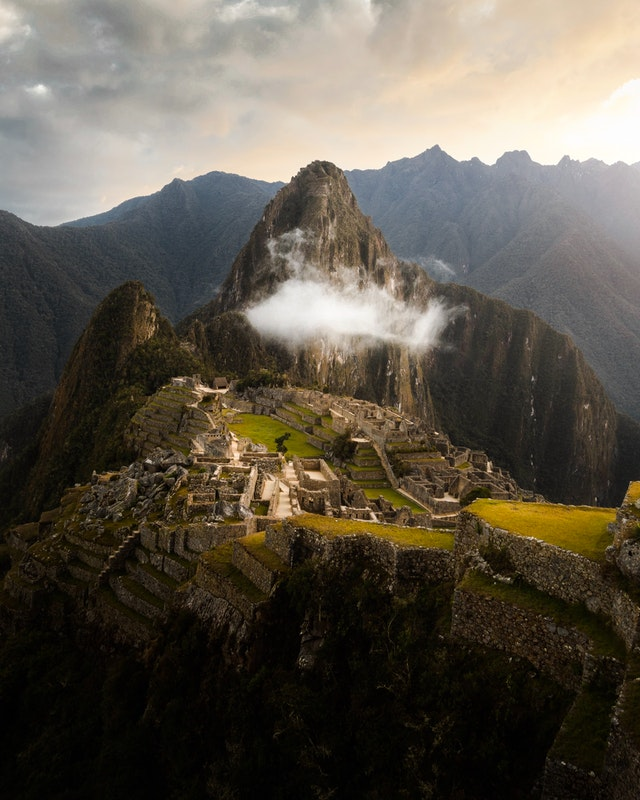
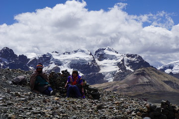

Caral es un sitio arqueológico donde se hallan los restos de la principal ciudad de la civilización Caral. Se encuentra en el valle de Supe, a 182 kilómetros al norte de Lima (Perú), a 23 km del litoral y a 350 msnm. Se le atribuye una antigüedad de 5000 años y es considerada la ciudad más antigua de América, pues no se ha encontrado hasta ahora en dicho continente otro sitio más antiguo con semejante diversidad de edificios monumentales, con distintas funciones ceremoniales y administrativas. Ha sido declarada Patrimonio Cultural de la Humanidad por la UNESCO.
La cultura Caral se desarrolló entre 3000 y 1800 a. C. (Arcaico Tardío y Formativo Inferior) es decir, fue contemporánea de otras civilizaciones primigenias como las de Egipto, India, Sumeria, China, pero a diferencia de ellas (que intercambiaron sus logros), se desarrolló en completo aislamiento. En América, es la más antigua de las civilizaciones prehispánicas, superando en 1500 años a la civilización Olmeca, otro importante foco civilizatorio situado en Mesoamérica.
Las líneas de Nazca y geoglifos de pampas de Jumana o simplemente líneas de nazca son antiguos geoglifos que se encuentran en las pampas de Jumana, en el desierto de Nazca, entre las poblaciones de Nazca y Palpa, en el departamento de Ica (Perú). Fueron trazadas por la cultura nazca y están compuestas por varios cientos de figuras que abarcan desde diseños tan simples como líneas hasta complejas figuras zoomorfas, fitomorfas y geométricas que aparecen trazadas sobre la superficie terrestre. Desde 1994, el Comité de la Unesco ha inscrito Las líneas y geoglifos de Nazca y de Pampas de Jumana como Patrimonio de la Humanidad. Sin embargo, en los últimos años han sufrido graves daños por la construcción de la carretera panamericana y las rodadas de todoterrenos.
Aunque pueden ser vistas parcialmente desde las colinas próximas, los primeros en distinguirlas fueron pilotos militares y civiles peruanos. En 1932 los arqueólogos Julio César Tello y Toribio Mejía Xesspe realizaron la primera investigación científica sobre las líneas. Tello conjeturaba que se trataba de simples caminos. En 1942 prosigue sus investigaciones el historiador estadounidense John Rowe, quien las considera “centros de adoración”.
El autor intenta plasmar en este blog, las experiencias y aventuras vividas en las diferentes regiones del Perú. Esperando que sean de su agrado y que pronto puedan visitar los paisajes que ofrece este maravilloso país.